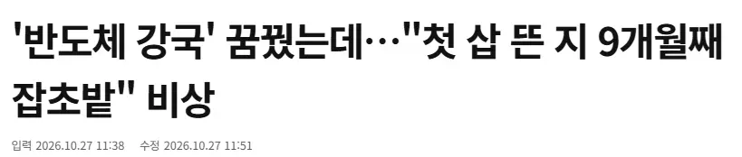
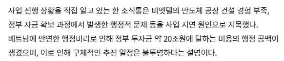

에고 룰북에 슈킹하지말라는 말을 안써놨나보네 ㅠㅠ
그럼 어쩔 수 없지 ㅇㅇ


에고 룰북에 슈킹하지말라는 말을 안써놨나보네 ㅠㅠ
그럼 어쩔 수 없지 ㅇㅇ
한국은 베트남의 반도체 공장 비리가 두렵습니까?
?? : 우와 20조다 개맛있겠다
타이밍은 좋았는데
여수 엑스포는 애교네
인도차이나반도 한쪽에 있긴 하지만, 베트남 자체가 반도는 아닌데...
정부주도로 하는 사업이 제대로 될리가 없지
기업주도의 3배는 부어도 돌아갈까말까
기술사업은 그보다 더하지
러시아 신형 전차처럼 후진국들은 슈킹할때 공장 건섧부터 싸그리 해먹는다는 말이 맞구나
제목을 묘하게 비틀었는데 20조를 슈킹했다는게 아니라, 행정비리로 20조 프로젝트 공장건설이 지연되고 있는 맥락으로 읽히는데. 돈 달라며 버티는 공무원들 때문에 진행이 더뎌진게 아닌가 함. 중국도 찍어누르면 하는데 베트남은 그게 안되는지 빨리빨리가 중요한 반도체 경쟁에서 저런 시스템으로는 불가능할듯.
베트남 하노이 제주카페에 간적이 있다
재떨이를 주라고 하니까 바닥에 그냥 끄라고 하더라 그래서 내깐엔 문화시민 이랍시고 재떨이를 주지않아 담배를 안피웠다
그후 자리에서 일어나자 카페에서 일하는 직원들 정확히 여섯명이 내자릴 정리하더라
각자 분담이 있고 그래서 바닥에 끄라던거였다
나같이 카페에서 재떨이가 없다고 담배를 안피우면 재떨이를 구비하고 그청년은 일할 기회를 놓치겠지 가이드에 물어보니 하루일당이 한화로 1만 2천3천원꼴이라더라
이이야기를 왜 꺼내냐면
하노이의 의리의리한 아파트들은 서울아파트들과 비슷한 금액에 거래되는데
커피숍 청소를 매일 하루도 안쉬고 할때
1억이 모이는 시점이 22.8년이 걸린다
그만큼 베트남의 빈부격차는 어마어마하다
다만 하루일당이 1만 2천원인 사람들이 많아서
베트남은 오늘도 돌아간다
으리으리
정독 감사
김보성 츌몰지역이랍니다
의리의리는 씨바 또 첨들어보네 ㅋㅋㅋ
이거 뭔가 그 ㅋㅋㅋ 내가 바닥에 꽁초 안버리면. 저 청소부 아저씨 할일이 없어서. 짤리잖아
하던 썰 보는 기분이 드냐 왜...
왜 그냐 의리빼믄 시첸디
베트남 사업에서 20조??..........
대부분의 자본주의자들이 잊고 있는 사실이지만 정말로 중요하고 핵심적인 가치,사물들은 돈을 아무리 쏟아부어도 사 올 수 없는 법이지...
이게 실질적 문맹인건가? 저걸 20조 슈킹으로 읽네
슈킹아닌가? 행정비리때문이라고 애매하게 적혀있긴한데 20조 구멍날 일이 뭐가있음 뇌물 수수, 횡령아니면
슈킹일수도 있겠지만 ... 어쩌면 결재라인이 뇌물 달라거나 땅주인 지역 유지들이 뭐 해달라거나 하는 식으로 집행이 막혀있는 것일수도 있고.. 20조 통째로 먹고 한푼도 없다는 의미는 아닐꺼야 아마. '20조에 달하는 비용의 행정공백' 어쩌고 하는 표현보니 무슨 국제행사하면 @@조 효과 같은 식의 표현 냄새도 나고
방플 실패
슈킹하지말라고 안적혀있었나보네
중국이 저 지랄나는걸 감안하고 돈으로 때려박아서 반도체 만듬
보통은 절대 안되는건데 돈을 무한으로 쏟아부으니까 뭐가 되긴 되는구나 싶음